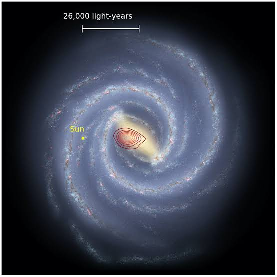

INICIO
Las galaxias fósiles conocidas formalmente en la astronomía como galaxias enanas ultra débiles ,son auténticas reliquias del universo primitivo
Se les llama "fósiles" porque se formaron durante los primeros mil millones de años tras el Big Bang y han permanecido prácticamente congeladas en el tiempo, con muy pocos cambios desde entonces

← Volver al Menú Principal